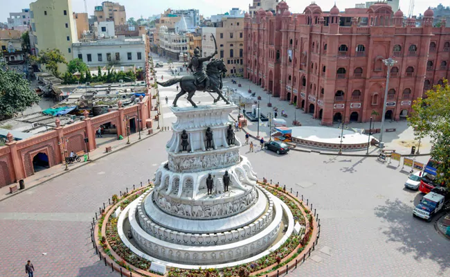

Chandigarh:
The Punjab government on Friday said it was extending the COVID-19 lockdown in the state till May 1, becoming the second state to do after Odisha.
Punjab has registered 132 of the over 12,000 coronavirus cases reported in India till Friday despite a strict three-week clampdown to control the outbreak.
Areas in Delhi and Mumbai have emerged as hotspots and many states have urged Prime Minister Narendra Modi to extend the nationwide lockdown beyond its expiry date of Tuesday.The country's shutdown has left crores out of work and forced an exodus of migrant workers from the cities to their homes in the hinterland, but states say it is more important to save lives.
Officials have warned that widespread transmissions could be disastrous in the country where crores of people live in dense slums, social distancing norms are often impossible and the health care system is overburdened.The concern is especially grave in Mumbai, where more than 1,100 people have tested positive for the virus, including a growing number from the slums, where a total lockdown is impossible to enforce.
One scenario visualises an extended lockdown in Mumbai, while some curbs are eased in the surrounding western state of Maharashtra, sources told NDTV.
Punjab too has said it may allow relief to farmers in some districts from the lockdown to harvest the winter-spring crop.
Addressing an online news briefing, Chief Minister Amarinder Singh said that predictions by health experts about the spread of the pandemic are "horrendous and frightening".Saying that most of the new cases reported in Punjab were those of secondary transmission, the Chief Minister said there were indications of his state "moving into" the community transmission stage of the outbreak.
Community transmission is Stage 3 of an outbreak, when the infections escalate and it is difficult to trace the source.
However, the central government asserted again that India is not in that stage. "I reiterate, there is no community transmission yet across the country," said Lav Aggarwal, Joint Secretary, Health Ministry at a daily briefing in Delhi.Vikas Swarup, a top foreign ministry official said, India's tally is small compared to the rest of the world and the lockdown prevented a surge that would have been difficult to handle.